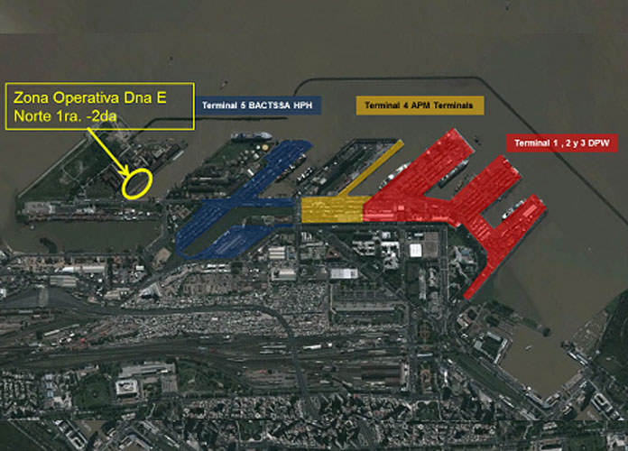
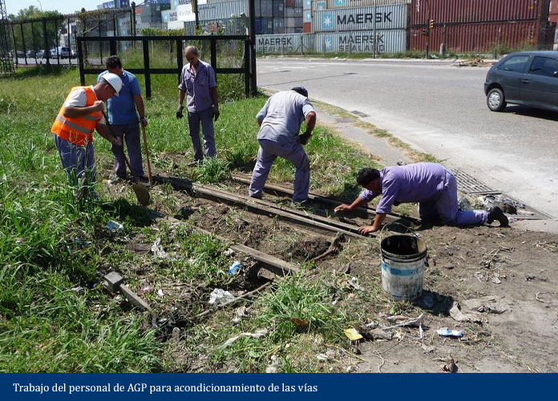
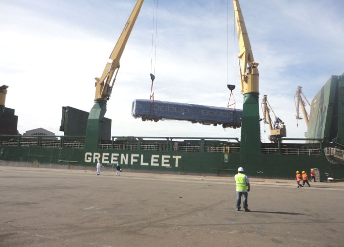
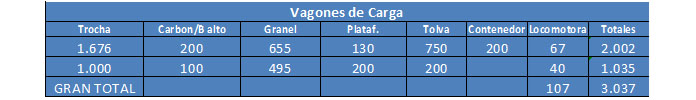
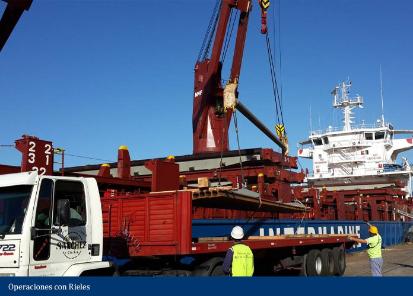

Rol de los puertos en el Plan nacional de mejoramiento del sistema ferroviario argentino
Sobre finales del año 2012 se le encomendó a la Administración General de Puertos (AGP) la tarea de encontrar una solución logística alternativa y superadora en lo referente a las operaciones de descarga de coches ferroviarios que se realizaban en otras instalaciones portuarias, cuyos resultados habían sido poco satisfactorios tanto en la operación como en los costos.
La opción presentada fue realizar las operaciones de descarga de material rodante para el plan de renovación de infraestructura ferroviaria del Estado Nacional, en el muelle de Dársena E Norte, Secciones 1° y 2°.

En este sitio operativo del muelle público de Dársena E Norte se da una condición ideal: se encuentra el centro de la vía de trocha ancha (1,676 m) a 5,15 metros del borde de muelle, contando además con el tercer riel que permitiría la operación en trocha métrica (1,00 m).
La operativa
Esta posición de la vía respecto al muelle permite descargar los vagones con grúas del buque directamente desde las bodegas o cubiertas sobre la vía, con un solo movimiento, logrando una operación muy eficiente y de bajo costo. Posteriormente, los coches de pasajeros y vagones de carga se remolcan con tracción propia de la AGP, moviéndose desde el muelle hacia las parrillas de maniobra portuaria, donde se almacenan inicialmente en Empalme 3-5 o Empalme Norte hasta cumplir con los trámites aduaneros.
Como paso previo, y tras un arduo trabajo del personal de AGP y de cuadrillas ferroviarias de apoyo externas, se logró en tiempo récord y a bajo costo poner nuevamente en servicio el trazado ferroviario desde el Muelle de Dársena E hasta la Parrilla Empalme Junín, listos para recibir el primer buque: el BBC Tennessee, el 1° de febrero de 2013.

Llegada de los buques
El 1° de febrero de 2013 llegó al muelle público de la Dársena E el BBC Tennessee, un buque oceánico de 138 metros de eslora y 21 metros de manga, apto para operar carga pesada. Procedía del puerto de Shanghái, transportando las primeras dos locomotoras para la Línea San Martín. Cada locomotora pesaba 111,5 toneladas: una carga que el buque podía manejar con sus dos grúas de 120 toneladas de capacidad de izaje que, en tándem, alcanzan las 240 toneladas. La operación llevó aproximadamente 8 horas.
Otras operaciones fueron sucediéndose en forma consecutiva y satisfactoria, con una operación logística a medida de las necesidades de cada tipo de material rodante, sin averías ni accidentes personales, y ahorrando importantes sumas del Estado nacional en concepto de almacenaje.

Con la operación del buque Huanghai Advance, a principios de julio de 2014, se descargó el coche de pasajeros número 500. En total, las operaciones de material rodante en la Dársena E del Puerto Buenos Aires superaron los 1.110 equipos entre coches y locomotoras, para prácticamente todas las líneas de pasajeros urbanos e interurbanos.

Convenio con ADIFSE y operaciones con rieles
En octubre de 2013 se firmó un convenio de cooperación entre ADIFSE y AGPSE, por el cual se ofrecen servicios portuarios para las operaciones con rieles a cambio del mantenimiento y renovación de vías en el interior del puerto.
A diferencia de los buques con vagones de pasajeros, los buques con cargas de rieles requieren mayor calado disponible para su ingreso, por lo que se realizaron tareas de mantenimiento y adecuación del dragado de acceso e interior de la Dársena E, llevándola a su calado de diseño de 10 metros a pie de muelle.
Dentro de los trabajos de rehabilitación de vías se incluyó la reconexión de la vía sobre el muelle norte, lo que permite contar hoy con 490 metros de vías en condiciones de uso sobre el mismo muelle, posibilitando la operación de dos buques en forma simultánea en Dársena E Norte.
